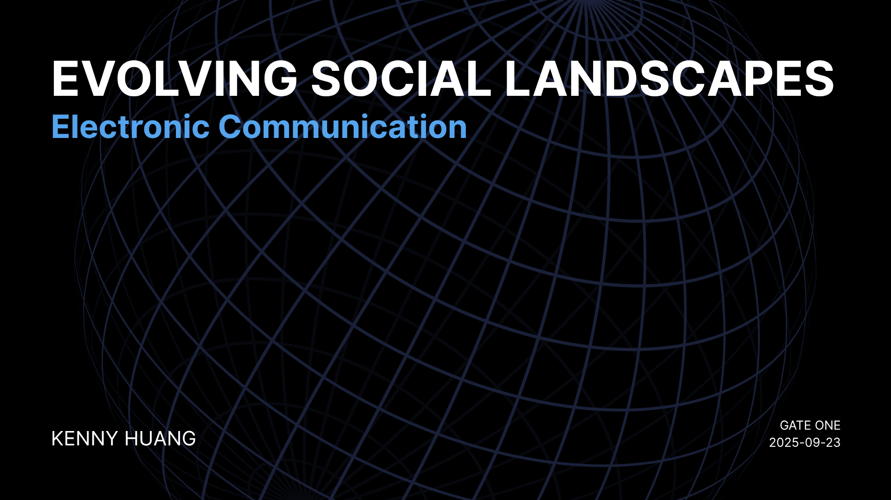
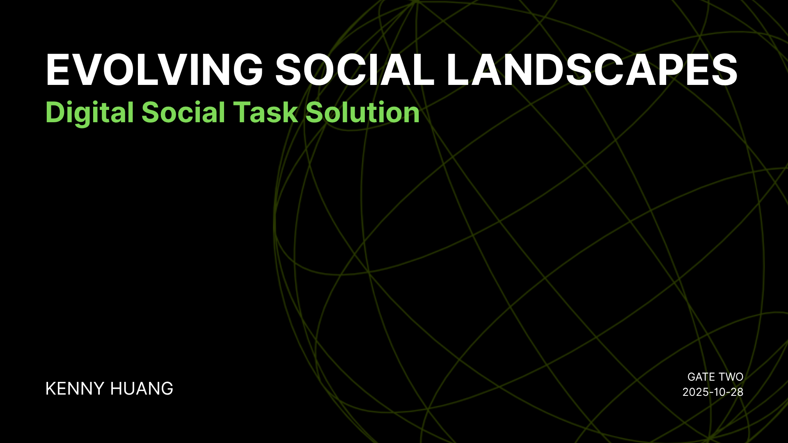
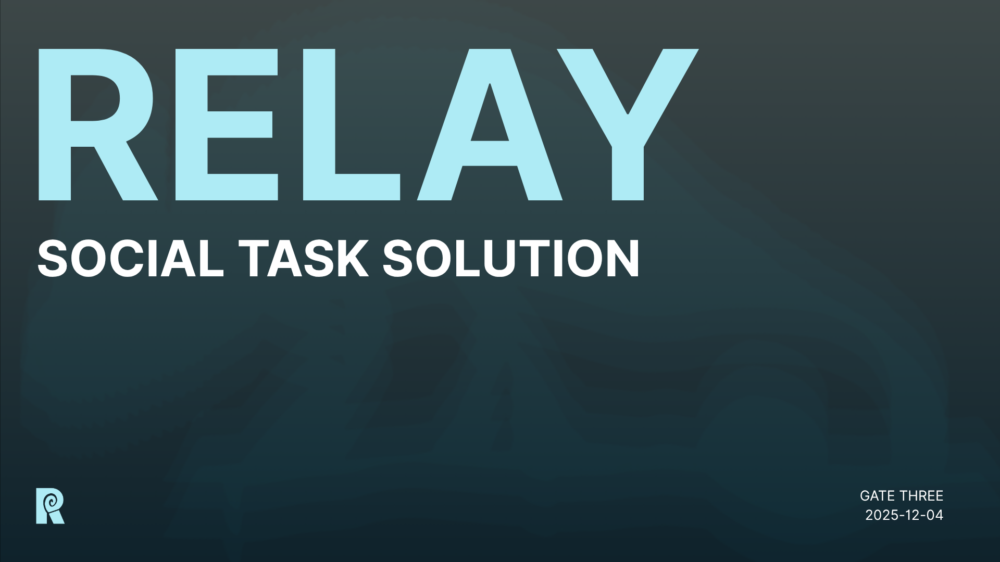
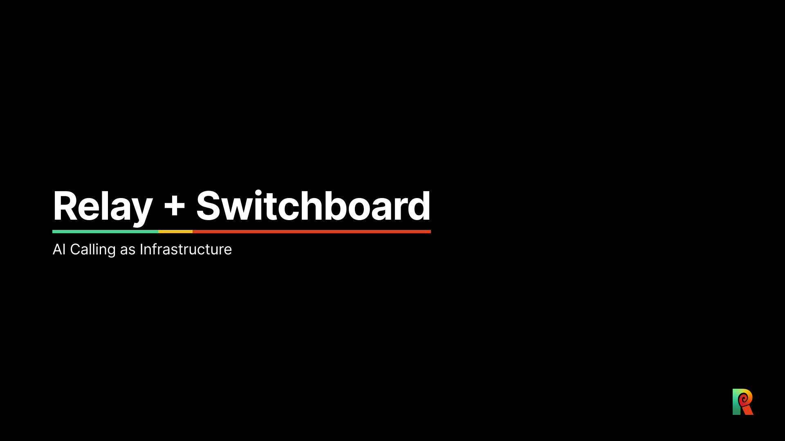
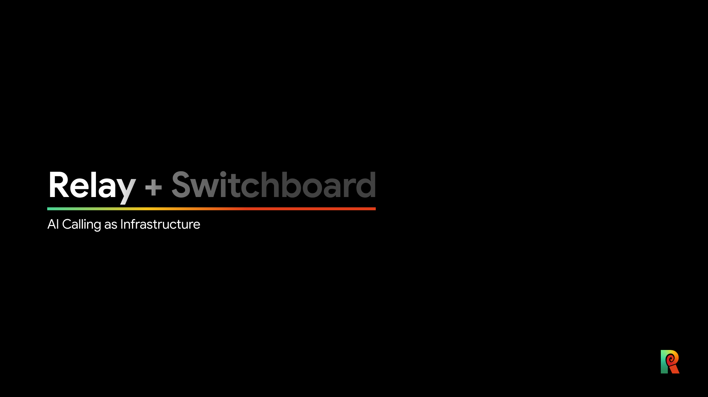

Relay + Switchboard
AI as Infrastructure
Relay and Switchboard are an integrated front-end and back-end system that allows users to make and take calls using a personal AI agent. Relay is the front-end agent that makes and takes menial calls for the user, providing real-time and post-call transcripts, as well as context learning, memory, and the ability to autonomously execute social tasks for the user. It also acts as a call screening tool, declining dubious calls whilst relaying more complex calls to the user. Switchboard is the back-end system that manages the user's AI agents, providing an interface within the phone's settings for delegating agents, setting personalization, accessing transcripts, understanding privacy, and managing access to external applications.
With the Gartner Hype Cycle predicting that Generative AI will reach its peak in the coming years, it is important to consider how Generative AI will look and function after it reaches a fully integrated state of mainstream adoption. Relay and Switchboard are an exploration of AI as pieces of infrastructure rather than as standalone applications, visualizing the potential for Generative AI to be seamlessly integrated into our lives without it being forced into applications it does not fit.
(Prototype is available on Github to try, but is only available at specified times as it utilizes a personal API key and Node.js back-end)
Problem Statement
People dislike the hassle of menial phone calls, but still desire to communicate with others out of necessity.
How can we create a utility that positions AI as infrastructure without losing the core human element of phone communication?
Core

Background

Initial Idea

Refined Idea

Relay

Switchboard